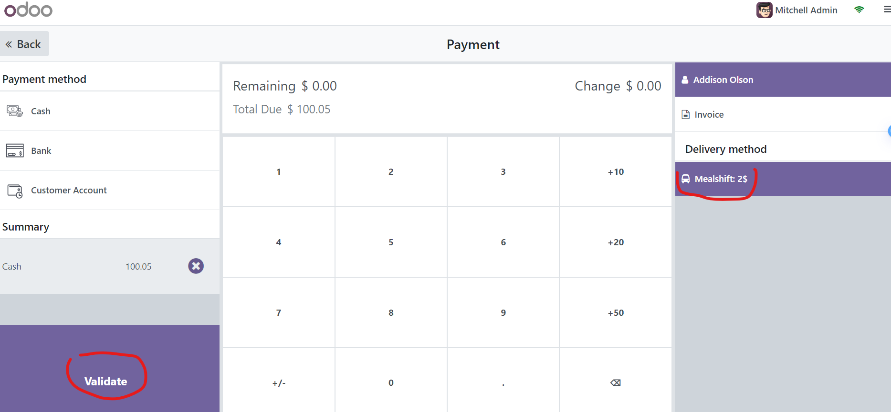

How to use
- install mealshift_delivery_provider addon from the Apps
- From (POS configuration menu or Website configuration menu) access shipping methods
- Select mealshift shipping method and set your proper configurations (partner, id, secret)
- Set (available on pos) field to True if you want to use this shipping method in the POS module
- To use the mealshift inside the POS you will need to go the product that
mealshift_delivery_provider
creates
which is called (Mealshift Delivery Product) go to (sale) tab and then select a category for
that
product so it can be
used in the pos.
- Go to POS or Website and make you can now select mealshift shipping method

- Retrieve the pricing from the shipping method based on your address or your latitude and
longitude
address values
- POS publish order: in pos the order is published to mealshift once the order is validated

- POS cancel order: in pos the order is canceled if you click on the "Cancel Delivery" button the
pos.order form view
- Website publish order: in website the order is published into mealshift once you click on the
"confirm" button the sale.order form view
- Website cancel order: in website the order is canceled once you click on the "cancel" button in
the
sale.order form view